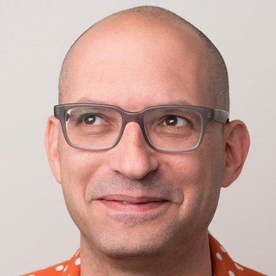

The talk is postponed due to the atrocities in the south
“My AI must have been broken”: How AI Stands to Reshape Human Communication

Mor Naaman
Professor at the Jacobs Technion-Cornell Institute at Cornell Tech and in the Information Science Department at Cornell University
Building 96
From autocomplete and smart replies to video filters and deepfakes, we increasingly live in a world where communication between humans is augmented by artificial intelligence. AI often operates on behalf of a human communicator by recommending, suggesting, modifying, or generating messages to accomplish communication goals. We call this phenomenon AI-Mediated Communication (or AI-MC). While AI-MC has the potential of making human communication more efficient, it impacts other aspects of our communication in ways that are not yet well understood. Over the last six years, my collaborators and I have been documenting the impact of AI-MC on communication outcomes, language use, interpersonal trust, and more. The talk will outline experimental findings from this work. For example, the research shows that AI-MC involvement can impact the evaluation of others; change the extent to which we take ownership over our messages; and shift not only what we write, but even our expressed opinions. Given the impact of AI-MC on interpersonal evaluations, the talk will also cover our recent research examining the (mostly false) heuristics humans use when evaluating whether text was written by AI. Overall, AI-MC raises significant practical and ethical concerns as it stands to reshape human communication, calling for new approaches to the development and regulation of these technologies.
About the Speaker
Mor Naaman is a Professor at the Jacobs Technion-Cornell Institute at Cornell Tech and in the Information Science Department at Cornell University. He currently serves as Associate Dean for Faculty Affairs at Cornell Tech. Mor leads a research group looking at topics at the intersection of technology, media and democracy. The group applies multidisciplinary techniques — from machine learning to qualitative social science — to study our information ecosystem and its challenges, with a special focus on AI-mediated communication and its impact on society. Before Cornell, Mor was on the faculty at the Rutgers School of Communication and Information, led a research team at Yahoo! Research Berkeley, received a Ph.D. in Computer Science from the Stanford University InfoLab, and played professional basketball for Hapoel Tel Aviv. He is also a former startup co-founder, and advises startup companies in social computing and related areas. He is a recipient of a NSF Early Faculty CAREER Award, research awards and grants from numerous corporations including Microsoft, Meta and Google, and multiple best paper awards.